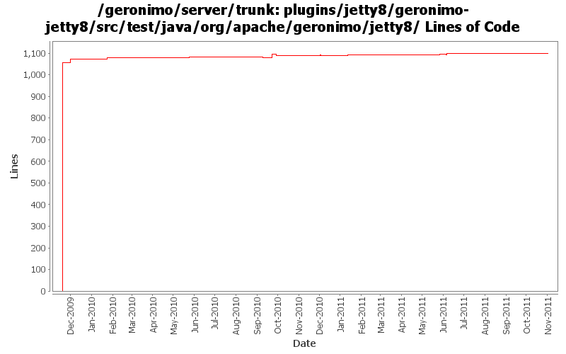

[root]/plugins/jetty8/geronimo-jetty8/src/test/java/org/apache/geronimo/jetty8
 app
(1 files, 36 lines)
app
(1 files, 36 lines)
 connector
(2 files, 78 lines)
connector
(2 files, 78 lines)
 security
(2 files, 99 lines)
security
(2 files, 99 lines)

| Author | Changes | Lines of Code | Lines per Change |
|---|---|---|---|
| Totals | 44 (100.0%) | 1206 (100.0%) | 27.4 |
| djencks | 29 (65.9%) | 1171 (97.1%) | 40.3 |
| xuhaihong | 12 (27.3%) | 32 (2.7%) | 2.6 |
| rickmcguire | 1 (2.3%) | 2 (0.2%) | 2.0 |
| dblevins | 2 (4.5%) | 1 (0.1%) | 0.5 |
GERONIMO-6204 Decouple OpenWebBeans from web container
0 lines of code changed in 1 file:
GERONIMO-6145 Factory info should not be shared among those web jsf applications in one EAR package
3 lines of code changed in 1 file:
GERONIMO-5993 MyFaces WebApplicationContext might not work if multiple JSF web applications in the same EAR package
Now, the name of web module will be used as the key.
6 lines of code changed in 2 files:
a. Update the WebAttributeNames in the geronimo-web module to WebApplicationConstants
b. Update the WebApplicationConstants in the geronimo-wab module to WABApplicationConstants
3 lines of code changed in 1 file:
Use another port to avoid the binding issue on the Apache build environment
16 lines of code changed in 4 files:
clean up owb before each test
3 lines of code changed in 1 file:
yanked debug line
0 lines of code changed in 1 file:
Related changes for OWB-503: Reduce static synchronized hashmap usage
For Geronimo this means mostly not passing around a HashMap as context, but instead the new WebBeansContext object
1 lines of code changed in 1 file:
fix build breakage caused by jetty8 version change
2 lines of code changed in 1 file:
GERONIMO-5050 use single owb lifecycle and context in jetty, fix a couple small problems
1 lines of code changed in 1 file:
Set the default JSPFactory in the test cases
2 lines of code changed in 1 file:
GERONIMO-5508 implement ServletContainerInitializer support for jetty similar to tomcat
2 lines of code changed in 1 file:
GERONIMO-5624 add more goo to WebAppInfo, use in jetty
0 lines of code changed in 1 file:
GERONIMO-5624 better default web app merging, and make jetty use more of the info tree
0 lines of code changed in 1 file:
GERONIMO-5624 patch (slightly modified) from Ivan to use info tree to merge security info from dynamic additions and annotations (this is new for jetty).
28 lines of code changed in 1 file:
GERONIMO-5567 clean up unused classes and code
34 lines of code changed in 5 files:
GERONIMO-5567 rewrite jetty integration to use a openejb-like info tree and the *Registration interfaces. This gets everything started in the right order and is a lot simpler. Old code still needs to be removed
2 lines of code changed in 1 file:
GERONIMO-5506 Make servlet context createFoo methods use our object creation, and use the createFoo methods for filters and servlets. Listeners are yet to be created this way.
14 lines of code changed in 2 files:
a. remove the use of configurationUrl \n b. Add a BundleAwareReference interface
1 lines of code changed in 1 file:
1. Separate the map for module scope and comp scope
2. Keep the same map instance in the shareContext, so that other module extension could have chance to add jndi info
1 lines of code changed in 1 file:
cf OPENEJB-1252 replace file.toURL() with file.toURI().toURL()
1 lines of code changed in 1 file:
web apps no longer have a base url since they are always packed in bundles
0 lines of code changed in 1 file:
GERONIMO-4996 GERONIMO-5025 separate jndi context setup from web app context since jsf needs it too. Hook up myfaces which now starts. Don't know if myfaces works
9 lines of code changed in 1 file:
GERONIMO-5025 Initial work on ee 6 scoped jndi stuff. Minimal testing so far
1 lines of code changed in 1 file:
GERONIMO-4965 Get pluto 2 running as osgi blueprint service. Base console sort of works. Fix a bug in jetty single-bundle-ear support for locating resources
1 lines of code changed in 1 file:
GERONIMO-4964 base jetty ServletContext.getResource on bundle.getEntry
19 lines of code changed in 3 files:
rename jetty7 to jetty8
1056 lines of code changed in 7 files: